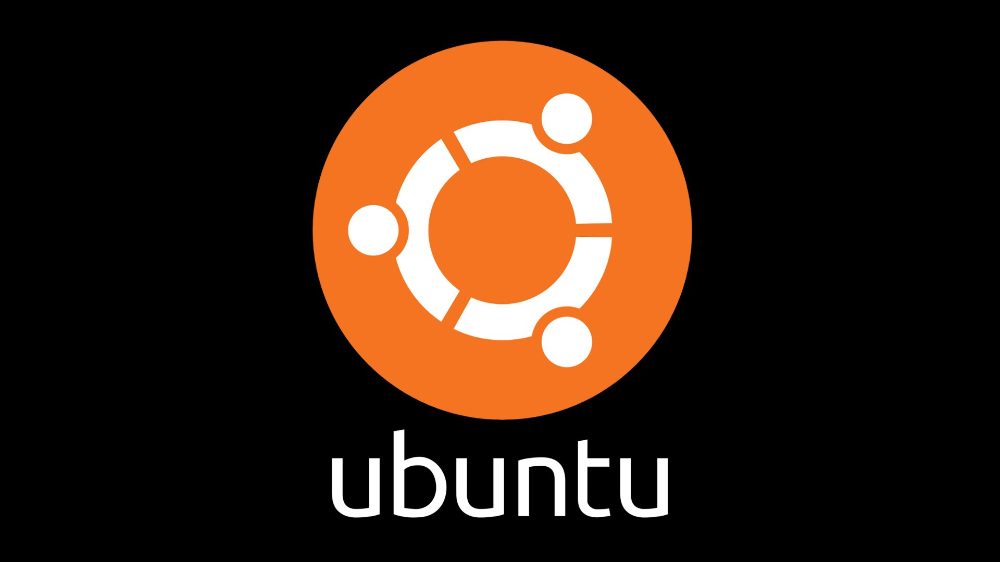

Red Hat
Red Hat Enterprise Linux provides more than an operating system—it also connects you to Red Hat’s extensive hardware, software, and cloud partner ecosystem, and comes with 24x7 support. Red Hat Enterprise Linux 9.3 is our latest release, but with access to all supported versions and a 10 year life cycle, you can upgrade on your schedule and adopt new features when needed.
Ubuntu
Stay up-to-date with regular updates and upgrades Long-term support (LTS) releases of Ubuntu Server receive standard security updates for around 2,500 packages in the Ubuntu Main repository for five years by default. Every six months, interim releases bring new features, while hardware enablement updates add support for the latest machines to all supported LTS releases.
SUSE Linux Enterprise Server

SUSE Linux Enterprise Server SUSE Manager's configuration, auditing, and automation features make it easy to ensure compliance with internal security policies and external regulations. Includes APIs and services to create applications that can work with a wide range of architectures, servers, storage, and networks.